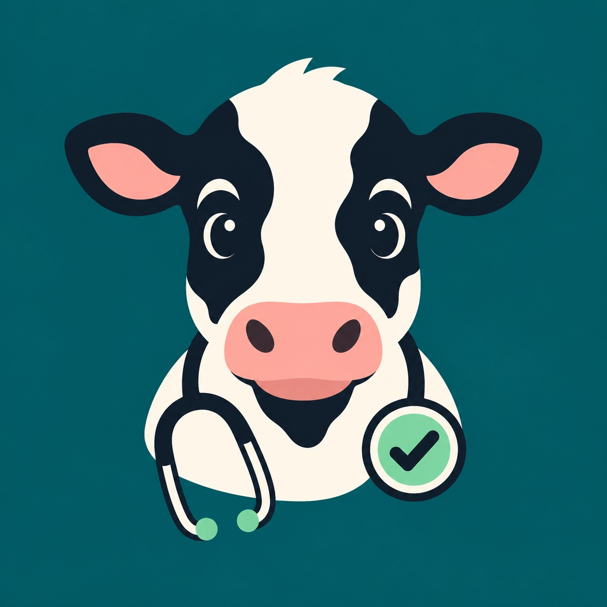

Um sistema especialista que conduz a anamnese pergunta a pergunta, chega a um parecer com grau de confiança e mostra a regra e a fonte que sustentam cada conclusão. Funciona sem internet, no celular do curral e no computador do escritório.
Nenhum cadastro, nenhuma conta. Os dados ficam no seu aparelho.
Na propriedade leiteira familiar, a decisão sobre uma vaca doente costuma acontecer sem veterinário por perto, sem histórico à mão e sob pressão do horário da ordenha. O prejuízo raramente aparece como susto: aparece como leite descartado, tratamento repetido e vaca que nunca volta ao que era.
Uma pergunta por vez, escolhida pelo que ainda pode mudar o diagnóstico, dividida pelo custo de obter a resposta. O sistema responde sempre “por que essa pergunta?”.
As regras estão em arquivos versionados, com a página da cartilha da Embrapa citada regra a regra. O que é consenso veterinário sem fonte primária vem marcado como tal.
Suspeita de doença de notificação obrigatória ou quadro de emergência interrompe o questionário na hora e orienta a conduta imediata.
Para cada vaca: o leite que ela rendeu contra o que custou tratá-la, incluindo o leite descartado na carência. É o argumento econômico da anamnese precoce.
Sem servidor, sem nuvem, sem chave de API. O banco fica no aparelho — e dois aparelhos da mesma propriedade se sincronizam pelo Wi-Fi local, sem sair para a internet.
Reabrir um atendimento re-executa o motor com os fatos da época. O PDF leva o parecer, a conduta, as fontes e o traço completo do raciocínio.
Nenhum modelo de linguagem participa do diagnóstico. A inteligência está na base de conhecimento e no motor de inferência — ambos auditáveis dentro do próprio aplicativo.
O motor começa sabendo idade, dias em lactação, produção média e histórico de CMT. Não pergunta o que já está registrado.
Entre o que ainda está em aberto, escolhe a pergunta de maior ganho pelo menor custo — observar é barato, exame de laboratório é caro.
Fatores de certeza combinam as evidências. O parecer traz as hipóteses ordenadas, a conduta sugerida e a fonte de cada regra.
Atendimento, tratamento, carência do leite e calendário sanitário — tudo no banco local, pronto para virar relatório ou planilha.
O mesmo sistema, nos três lugares em que a decisão acontece.
A base de conhecimento é inspecionável dentro do aplicativo, com os casos de teste rodando ao vivo. A documentação técnica, o diagrama de classes e a suíte de testes acompanham o código.